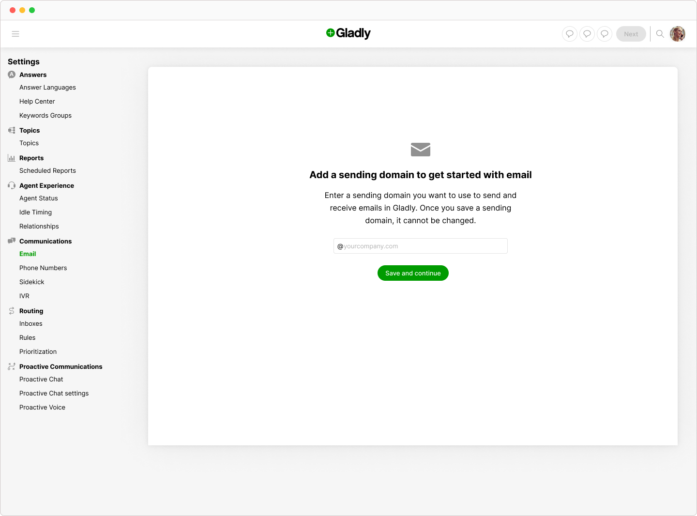
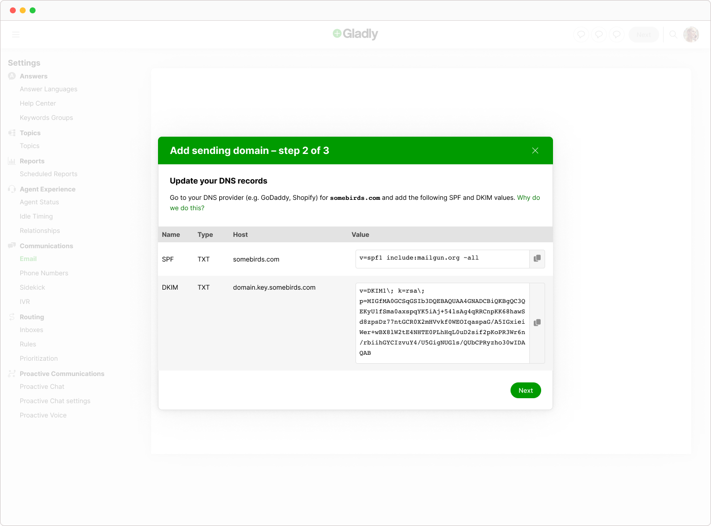
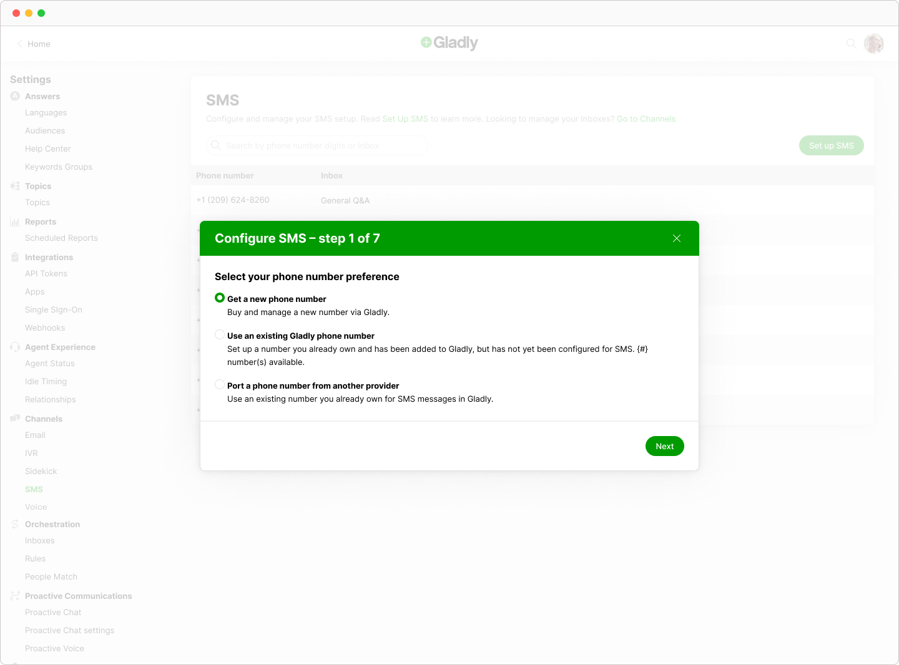
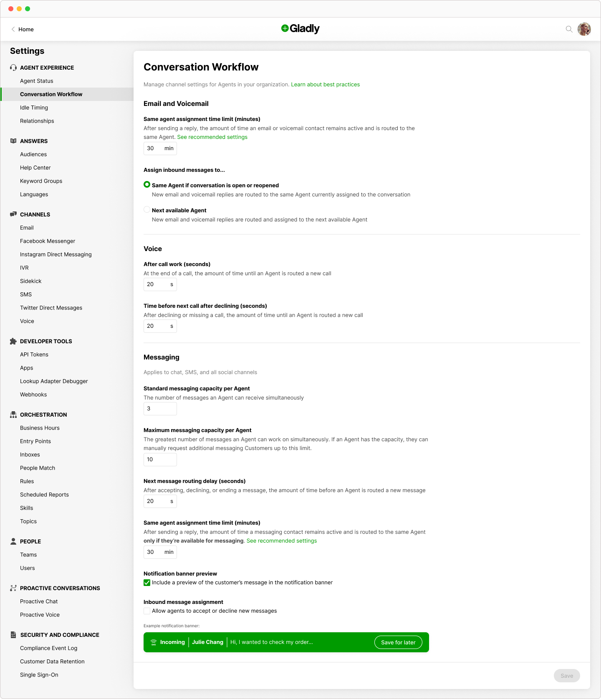
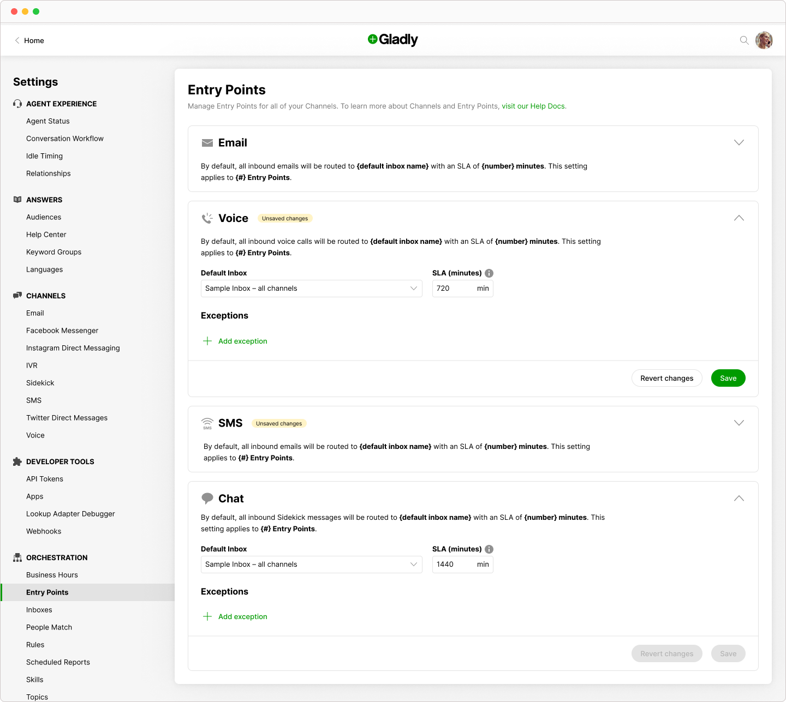
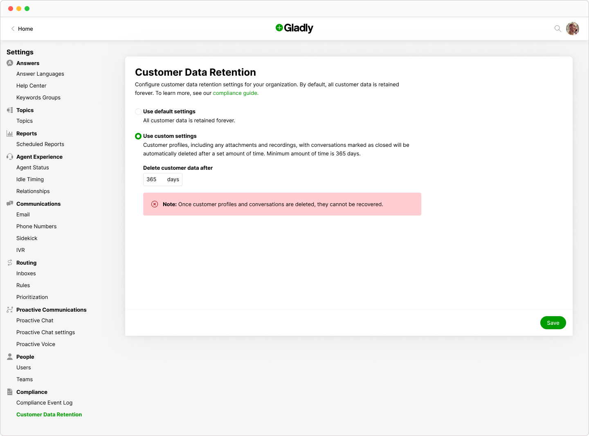
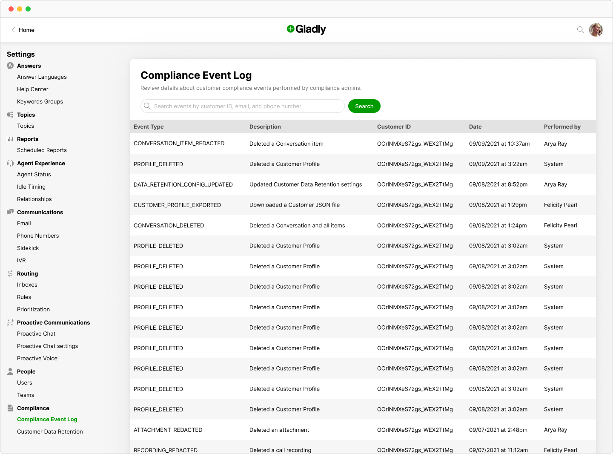

Gladly
B2B Product design and DEI · Apr 2021 – May 2022
Focused on people, not tickets, Gladly is a customer service platform for B2C brands with native support for many communication channels (e.g. voice, chat, and email).
I led design for self-serve product initiatives to help Gladly scale and thrive long-term. The design patterns I pioneered have saved the business 125K+/year in implementation costs since 2021/22. Customers can now set up email, voice, and SMS channels, manage PII deletion requests, and change platform preferences without hands-on support from Gladly's Professional Services team.
In addition to my design contributions, I was a founding member of Gladly's Diversity, Equity, Inclusion, and Belonging (DEIB) Council and headed Education Subcommittee programming. I loved creating fun, engaging spaces to learn about DEIB topics alongside my peers.
Email, voice, and SMS channels setup
Empowered Gladly admins to customize email, voice, and SMS channel configurations directly in-app. Prior to my efforts, these processes weren't customer-facing and required Professional Services' direct involvement — a time-consuming affair.
Once up and running, organizations can sign in to Gladly, rather than individual communication channel service providers (e.g. Facebook Messenger), to address customer inquiries in one, centralized place.

COVID-19 forced small businesses to rethink their operations and forced some to go online — precipitating an ecommerce boom. In turn, Gladly experienced a surge in growth as said small businesses turned to us as their customer service platform of choice.
Making email channel setup autonomous was the first step in achieving my team's greater self-service onboarding vision. The technical nature of this procedure inspired me to introduce a wizard pattern to enhance focus and reduce user error. Its adoption would serve as an indicator of success, or failure, for related onboarding initiatives, like voice and SMS setup.

Voice and SMS
With the success of self-serve email, voice and SMS setup was the next highest priority. Voice and SMS setup was more complicated than email due to Twilio API technical constraints coupled with general telecom limitations (e.g. certain regional area codes were unavailable).
I continued to build on the wizard pattern by introducing branching logic. This ensured users were directed to the most relevant path based on their needs, and provided experience exits for procedures that still required hands-on support.

Outcomes
My endeavors benefitted customer-facing colleagues and gave small businesses the tools necessary to make Gladly work for them.
- Increased onboarding efficiency for lower scale implementations
- Freed up “precious hours” that could get reallocated to higher-value consulting work instead of grunt configuration tasks
- Accelerated both internal and external product enablement


Intuitive orchestration
I brought clarity to Gladly’s Channels UX, an organizational chronic pain point that my team's Engineering Lead affectionately described as "the oldest page on the site...that was never actually designed". By separating a single, unwieldy page into two discrete views, Conversation Workflow and Entry Points, I created experiences better aligned with users' mental models of the platform.
Conversation Workflow consists of preferences that affect how customer service agents interact with Gladly. For example, users can adjust "After call work (seconds)" to a value that best reflects their team's working style.

Entry Points refers to how inbound channel-specific customer inquiries get routed in Gladly (e.g. any email sent to help@cutedog.co is assigned to the company's "North America | General support" inbox).

Outcomes
Customers and my peers alike appreciated the pared down UX.
- Introduced concept of failsafe, system defaults to prevent user error
- Simplified information groupings to promote psychological chunking
- Improved overall usability (e.g. Fitts' law)
Data compliance
To comply with consumer privacy laws, Gladly needed to field data deletion requests on our customers' behalf. The demand outpaced our Engineering and Support teams' manual turnaround time, and it soon became apparent that a different approach was needed.
I devised three workflows that enabled users to self-govern sensitive info:
- Delete customer data – remove sensitive information at a contact level
- Customer data retention – set an organization's data retention policy
- Compliance event log – view a record of compliance events and details


Outcomes
Giving customers self-serve access to compliance tools was a success for both internal and external stakeholders.
- Reduced turnaround time from days or weeks to mere seconds
- Freed up 50+ hours/mo Engineering and Support time
- Mitigated user error risk since customers can now take action themselves
Team: Kyle Kacius, Matt Baker, Patrick Burd, Andriy Shevchun, and Capgemini friends